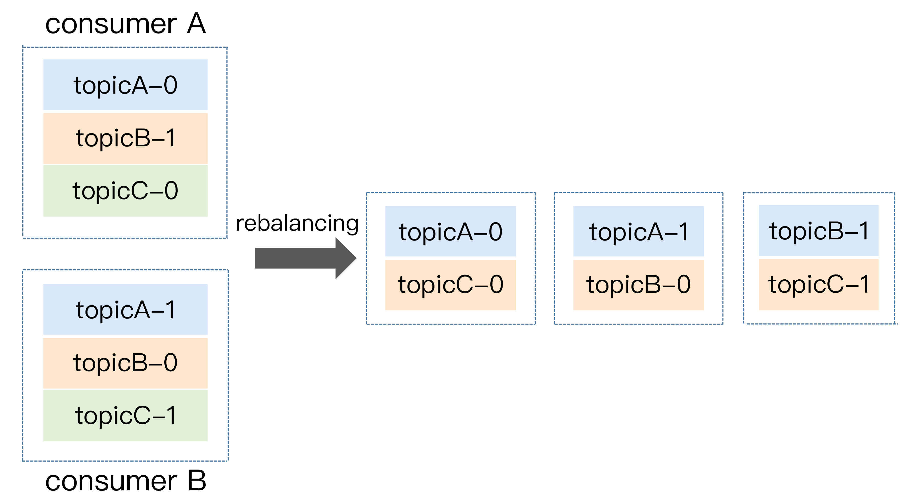
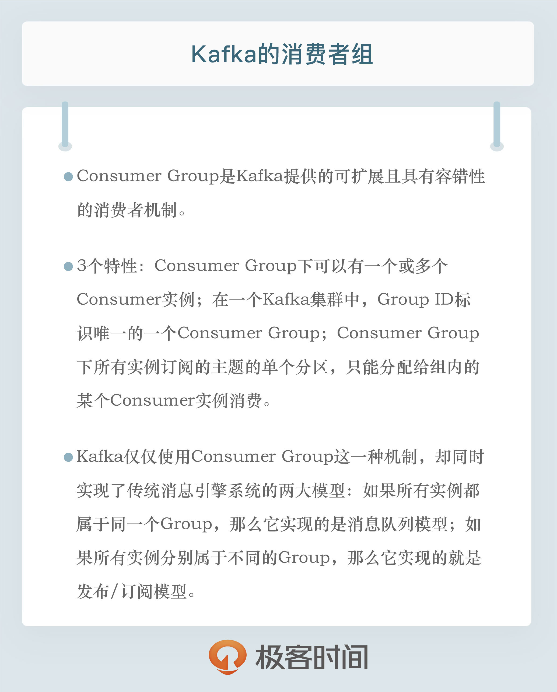

- 00 开篇词 为什么要学习Kafka？.md.html
- 01 消息引擎系统ABC.md.html
- 02 一篇文章带你快速搞定Kafka术语.md.html
- 03 Kafka只是消息引擎系统吗？.md.html
- 04 我应该选择哪种Kafka？.md.html
- 05 聊聊Kafka的版本号.md.html
- 06 Kafka线上集群部署方案怎么做？.md.html
- 07 最最最重要的集群参数配置（上）.md.html
- 08 最最最重要的集群参数配置（下）.md.html
- 09 生产者消息分区机制原理剖析.md.html
- 10 生产者压缩算法面面观.md.html
- 11 无消息丢失配置怎么实现？.md.html
- 12 客户端都有哪些不常见但是很高级的功能？.md.html
- 13 Java生产者是如何管理TCP连接的？.md.html
- 14 幂等生产者和事务生产者是一回事吗？.md.html
- 15 消费者组到底是什么？.md.html
- 16 揭开神秘的“位移主题”面纱.md.html
- 17 消费者组重平衡能避免吗？.md.html
- 18 Kafka中位移提交那些事儿.md.html
- 19 CommitFailedException异常怎么处理？.md.html
- 20 多线程开发消费者实例.md.html
- 21 Java 消费者是如何管理TCP连接的_.md.html
- 22 消费者组消费进度监控都怎么实现？.md.html
- 23 Kafka副本机制详解.md.html
- 24 请求是怎么被处理的？.md.html
- 25 消费者组重平衡全流程解析.md.html
- 26 你一定不能错过的Kafka控制器.md.html
- 27 关于高水位和Leader Epoch的讨论.md.html
- 28 主题管理知多少_.md.html
- 29 Kafka动态配置了解下？.md.html
- 30 怎么重设消费者组位移？.md.html
- 31 常见工具脚本大汇总.md.html
- 32 KafkaAdminClient：Kafka的运维利器.md.html
- 33 Kafka认证机制用哪家？.md.html
- 34 云环境下的授权该怎么做？.md.html
- 35 跨集群备份解决方案MirrorMaker.md.html
- 36 你应该怎么监控Kafka？.md.html
- 37 主流的Kafka监控框架.md.html
- 38 调优Kafka，你做到了吗？.md.html
- 39 从0搭建基于Kafka的企业级实时日志流处理平台.md.html
- 40 Kafka Streams与其他流处理平台的差异在哪里？.md.html
- 41 Kafka Streams DSL开发实例.md.html
- 42 Kafka Streams在金融领域的应用.md.html
- 加餐 搭建开发环境、阅读源码方法、经典学习资料大揭秘.md.html
- 用户故事 黄云：行百里者半九十.md.html
- 结束语 以梦为马，莫负韶华！.md.html
- 捐赠
15 消费者组到底是什么？
你好，我是胡夕。今天我要和你分享的主题是：Kafka的消费者组。
消费者组，即Consumer Group，应该算是Kafka比较有亮点的设计了。那么何谓Consumer Group呢？用一句话概括就是：Consumer Group是Kafka提供的可扩展且具有容错性的消费者机制。既然是一个组，那么组内必然可以有多个消费者或消费者实例（Consumer Instance），它们共享一个公共的ID，这个ID被称为Group ID。组内的所有消费者协调在一起来消费订阅主题（Subscribed Topics）的所有分区（Partition）。当然，每个分区只能由同一个消费者组内的一个Consumer实例来消费。个人认为，理解Consumer Group记住下面这三个特性就好了。
- Consumer Group下可以有一个或多个Consumer实例。这里的实例可以是一个单独的进程，也可以是同一进程下的线程。在实际场景中，使用进程更为常见一些。
- Group ID是一个字符串，在一个Kafka集群中，它标识唯一的一个Consumer Group。
- Consumer Group下所有实例订阅的主题的单个分区，只能分配给组内的某个Consumer实例消费。这个分区当然也可以被其他的Group消费。
你应该还记得我在专栏第1期中提到的两种消息引擎模型吧？它们分别是点对点模型和发布/订阅模型，前者也称为消费队列。当然，你要注意区分很多架构文章中涉及的消息队列与这里的消息队列。国内很多文章都习惯把消息中间件这类框架统称为消息队列，我在这里不评价这种提法是否准确，只是想提醒你注意这里所说的消息队列，特指经典的消息引擎模型。
好了，传统的消息引擎模型就是这两大类，它们各有优劣。我们来简单回顾一下。传统的消息队列模型的缺陷在于消息一旦被消费，就会从队列中被删除，而且只能被下游的一个Consumer消费。严格来说，这一点不算是缺陷，只能算是它的一个特性。但很显然，这种模型的伸缩性（scalability）很差，因为下游的多个Consumer都要“抢”这个共享消息队列的消息。发布/订阅模型倒是允许消息被多个Consumer消费，但它的问题也是伸缩性不高，因为每个订阅者都必须要订阅主题的所有分区。这种全量订阅的方式既不灵活，也会影响消息的真实投递效果。
如果有这么一种机制，既可以避开这两种模型的缺陷，又兼具它们的优点，那就太好了。幸运的是，Kafka的Consumer Group就是这样的机制。当Consumer Group订阅了多个主题后，组内的每个实例不要求一定要订阅主题的所有分区，它只会消费部分分区中的消息。
Consumer Group之间彼此独立，互不影响，它们能够订阅相同的一组主题而互不干涉。再加上Broker端的消息留存机制，Kafka的Consumer Group完美地规避了上面提到的伸缩性差的问题。可以这么说，Kafka仅仅使用Consumer Group这一种机制，却同时实现了传统消息引擎系统的两大模型：如果所有实例都属于同一个Group，那么它实现的就是消息队列模型；如果所有实例分别属于不同的Group，那么它实现的就是发布/订阅模型。
在了解了Consumer Group以及它的设计亮点之后，你可能会有这样的疑问：在实际使用场景中，我怎么知道一个Group下该有多少个Consumer实例呢？理想情况下，Consumer实例的数量应该等于该Group订阅主题的分区总数。
举个简单的例子，假设一个Consumer Group订阅了3个主题，分别是A、B、C，它们的分区数依次是1、2、3（总共是6个分区），那么通常情况下，为该Group设置6个Consumer实例是比较理想的情形，因为它能最大限度地实现高伸缩性。
你可能会问，我能设置小于或大于6的实例吗？当然可以！如果你有3个实例，那么平均下来每个实例大约消费2个分区（6 / 3 = 2）；如果你设置了8个实例，那么很遗憾，有2个实例（8 – 6 = 2）将不会被分配任何分区，它们永远处于空闲状态。因此，在实际使用过程中一般不推荐设置大于总分区数的Consumer实例。设置多余的实例只会浪费资源，而没有任何好处。
好了，说完了Consumer Group的设计特性，我们来讨论一个问题：针对Consumer Group，Kafka是怎么管理位移的呢？你还记得吧，消费者在消费的过程中需要记录自己消费了多少数据，即消费位置信息。在Kafka中，这个位置信息有个专门的术语：位移（Offset）。
看上去该Offset就是一个数值而已，其实对于Consumer Group而言，它是一组KV对，Key是分区，V对应Consumer消费该分区的最新位移。如果用Java来表示的话，你大致可以认为是这样的数据结构，即Map
我在专栏第4期中提到过Kafka有新旧客户端API之分，那自然也就有新旧Consumer之分。老版本的Consumer也有消费者组的概念，它和我们目前讨论的Consumer Group在使用感上并没有太多的不同，只是它管理位移的方式和新版本是不一样的。
老版本的Consumer Group把位移保存在ZooKeeper中。Apache ZooKeeper是一个分布式的协调服务框架，Kafka重度依赖它实现各种各样的协调管理。将位移保存在ZooKeeper外部系统的做法，最显而易见的好处就是减少了Kafka Broker端的状态保存开销。现在比较流行的提法是将服务器节点做成无状态的，这样可以自由地扩缩容，实现超强的伸缩性。Kafka最开始也是基于这样的考虑，才将Consumer Group位移保存在独立于Kafka集群之外的框架中。
不过，慢慢地人们发现了一个问题，即ZooKeeper这类元框架其实并不适合进行频繁的写更新，而Consumer Group的位移更新却是一个非常频繁的操作。这种大吞吐量的写操作会极大地拖慢ZooKeeper集群的性能，因此Kafka社区渐渐有了这样的共识：将Consumer位移保存在ZooKeeper中是不合适的做法。
于是，在新版本的Consumer Group中，Kafka社区重新设计了Consumer Group的位移管理方式，采用了将位移保存在Kafka内部主题的方法。这个内部主题就是让人既爱又恨的__consumer_offsets。我会在专栏后面的内容中专门介绍这个神秘的主题。不过，现在你需要记住新版本的Consumer Group将位移保存在Broker端的内部主题中。
最后，我们来说说Consumer Group端大名鼎鼎的重平衡，也就是所谓的Rebalance过程。我形容其为“大名鼎鼎”，从某种程度上来说其实也是“臭名昭著”，因为有关它的bug真可谓是此起彼伏，从未间断。这里我先卖个关子，后面我会解释它“遭人恨”的地方。我们先来了解一下什么是Rebalance。
Rebalance本质上是一种协议，规定了一个Consumer Group下的所有Consumer如何达成一致，来分配订阅Topic的每个分区。比如某个Group下有20个Consumer实例，它订阅了一个具有100个分区的Topic。正常情况下，Kafka平均会为每个Consumer分配5个分区。这个分配的过程就叫Rebalance。
那么Consumer Group何时进行Rebalance呢？Rebalance的触发条件有3个。
- 组成员数发生变更。比如有新的Consumer实例加入组或者离开组，抑或是有Consumer实例崩溃被“踢出”组。
- 订阅主题数发生变更。Consumer Group可以使用正则表达式的方式订阅主题，比如consumer.subscribe(Pattern.compile(“t.*c”))就表明该Group订阅所有以字母t开头、字母c结尾的主题。在Consumer Group的运行过程中，你新创建了一个满足这样条件的主题，那么该Group就会发生Rebalance。
- 订阅主题的分区数发生变更。Kafka当前只能允许增加一个主题的分区数。当分区数增加时，就会触发订阅该主题的所有Group开启Rebalance。
Rebalance发生时，Group下所有的Consumer实例都会协调在一起共同参与。你可能会问，每个Consumer实例怎么知道应该消费订阅主题的哪些分区呢？这就需要分配策略的协助了。
当前Kafka默认提供了3种分配策略，每种策略都有一定的优势和劣势，我们今天就不展开讨论了，你只需要记住社区会不断地完善这些策略，保证提供最公平的分配策略，即每个Consumer实例都能够得到较为平均的分区数。比如一个Group内有10个Consumer实例，要消费100个分区，理想的分配策略自然是每个实例平均得到10个分区。这就叫公平的分配策略。如果出现了严重的分配倾斜，势必会出现这种情况：有的实例会“闲死”，而有的实例则会“忙死”。
我们举个简单的例子来说明一下Consumer Group发生Rebalance的过程。假设目前某个Consumer Group下有两个Consumer，比如A和B，当第三个成员C加入时，Kafka会触发Rebalance，并根据默认的分配策略重新为A、B和C分配分区，如下图所示：

显然，Rebalance之后的分配依然是公平的，即每个Consumer实例都获得了2个分区的消费权。这是我们希望出现的情形。
讲完了Rebalance，现在我来说说它“遭人恨”的地方。
首先，Rebalance过程对Consumer Group消费过程有极大的影响。如果你了解JVM的垃圾回收机制，你一定听过万物静止的收集方式，即著名的stop the world，简称STW。在STW期间，所有应用线程都会停止工作，表现为整个应用程序僵在那边一动不动。Rebalance过程也和这个类似，在Rebalance过程中，所有Consumer实例都会停止消费，等待Rebalance完成。这是Rebalance为人诟病的一个方面。
其次，目前Rebalance的设计是所有Consumer实例共同参与，全部重新分配所有分区。其实更高效的做法是尽量减少分配方案的变动。例如实例A之前负责消费分区1、2、3，那么Rebalance之后，如果可能的话，最好还是让实例A继续消费分区1、2、3，而不是被重新分配其他的分区。这样的话，实例A连接这些分区所在Broker的TCP连接就可以继续用，不用重新创建连接其他Broker的Socket资源。
最后，Rebalance实在是太慢了。曾经，有个国外用户的Group内有几百个Consumer实例，成功Rebalance一次要几个小时！这完全是不能忍受的。最悲剧的是，目前社区对此无能为力，至少现在还没有特别好的解决方案。所谓“本事大不如不摊上”，也许最好的解决方案就是避免Rebalance的发生吧。
小结
总结一下，今天我跟你分享了Kafka Consumer Group的方方面面，包括它是怎么定义的，它解决了哪些问题，有哪些特性。同时，我们也聊到了Consumer Group的位移管理以及著名的Rebalance过程。希望在你开发Consumer应用时，它们能够助你一臂之力。

开放讨论
今天我貌似说了很多Consumer Group的好话（除了Rebalance），你觉得这种消费者组设计的弊端有哪些呢？
欢迎写下你的思考和答案，我们一起讨论。如果你觉得有所收获，也欢迎把文章分享给你的朋友。
© 2019 - 2023 Liangliang Lee. Powered by gin and hexo-theme-book.